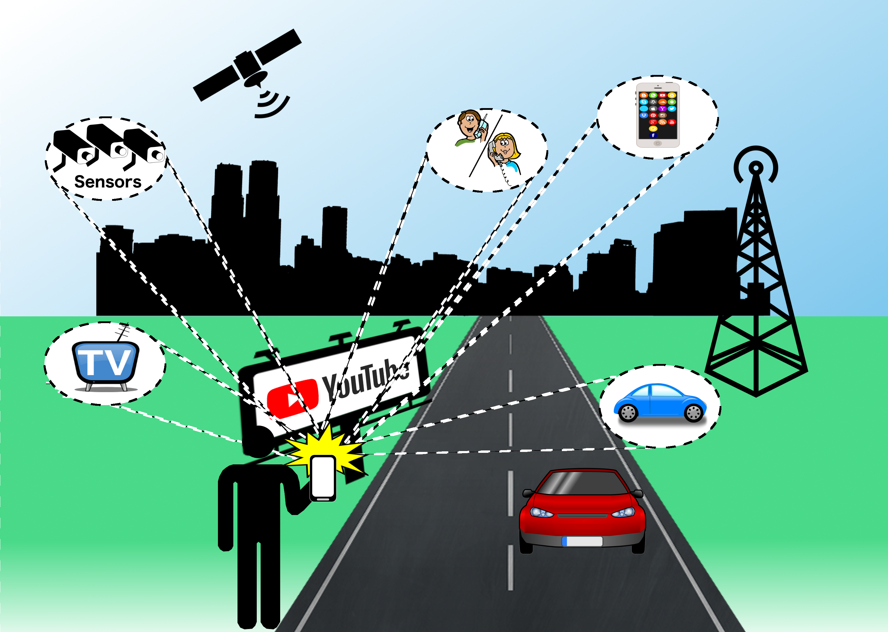

Fundamental Technologies for supporting 5G scenarios
The upcoming 5th Generation of Telecommunication Networks will make use of new base mechanisms and technologies, in order to address the increasingly complex requirements of Information and Communication Technologies deployment scenarios.
Core to these technologies stand Software Defined Networking and Network Function Virtualization mechanisms, which aim to increase the flexibility, dynamism, and capabilities of the networking fabric.
We thus stand and an important juncture, where such technologies can be dually preceived not only as the underlying operational mechanisms for 5G-enablement, but also as the percursors of more advanced scenarios and utlization concepts.
5G City and 5G Operator
The project focuses on contributions for the enablement of new and enhanced mechanisms for Operators and Smart-cities deployments.
The 5G Operator: Operators, under scope of a 5G architecture, will go beyond the provisioning of new mobile network radio solutions. Beyond direct improvements to bandwidth, latency and large numbers of connected nodes, 5G Operators will require smart capabilities that couple, in a flexible and dynamic way, the optimisation of service provisioning for mobile users in heterogeneous connectivity environments. On one hand, different forms of wireless and wired connectivity solutions are becoming available in different aspects, providing different kinds of access technologies. In order to make such different technologies available and manageable, current technologies need to replicate management and control aspects, representing a potential waste of resources and unoptimal servicing paths. On the other hand, the explosion of on-line and smartphone apps have been forever changing user consumption habits. For example, nowadays it is widely common for consumers to also become producers, which require the underlying infrastructure to offer solutions for real time video broadcasting while on the move.
5G City:Adding to the previous challenge of optimal connectivity in different access technologies, there is also the challenge of device heterogeneity. With the explosion of the Internet of Things, allowing the conception and enablement of Smart-X scenarios, such as Smart-cities or Smart-Agriculture, we are witnessing the addition to the connectivity plane of huge numbers of devices with disparate features. In order to allow their utilisation to trully flourish and enable the vision of Smart-X and Digital Societies, control aspects need to be aware of the capabilities of the devices, how to optimize not only involved connectivity procedures, but also how to interact with the devices.
Key Contributions
5G-VCoM provides the most advanced enabling technologies for 5G Operators and 5G Cities by addressing:
- Provide improved, flexible and dynamic means for access-independent optimised
mobility management, allowing Always Best Connectivity for wireless and wireless terminals.
- Enhance and support network control mechanisms by allowing SDN and NFV mechanisms to reach
not only network end-point, but actually be able to reach the mobile terminals for added
control and optimization capabilities.
- Enhance performance-demanding 5G Operator and 5G City scenarios by virtualizing key
components (both from a user or a network standpoint) in a cloud-computing substrate, allowing
new performance, control and capabilities to be created.
- Create the underlying measures to provide a "virtualised" vision of different components,
allowing their virtualised representation to be enhanced with added features, in a streamlined
and controllable way.
Results are being made available in open-source software, scientific dissemination and standardisation contributions.
- Provide improved, flexible and dynamic means for access-independent optimised mobility management, allowing Always Best Connectivity for wireless and wireless terminals.
- Enhance and support network control mechanisms by allowing SDN and NFV mechanisms to reach not only network end-point, but actually be able to reach the mobile terminals for added control and optimization capabilities.
- Enhance performance-demanding 5G Operator and 5G City scenarios by virtualizing key components (both from a user or a network standpoint) in a cloud-computing substrate, allowing new performance, control and capabilities to be created.
- Create the underlying measures to provide a "virtualised" vision of different components, allowing their virtualised representation to be enhanced with added features, in a streamlined and controllable way.